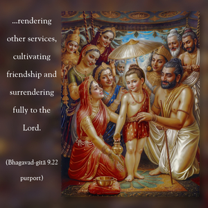
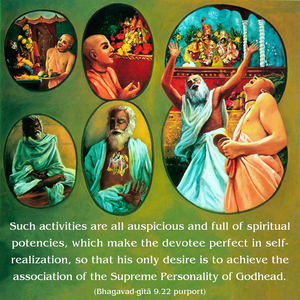

But those who always worship Me with exclusive devotion, meditating on My transcendental form – to them I carry what they lack, and I preserve what they have.


One who is unable to live for a moment without Kṛṣṇa consciousness cannot but think of Kṛṣṇa twenty-four hours a day, being engaged in devotional service by hearing, chanting, remembering, offering prayers, worshiping, serving the lotus feet of the Lord, rendering other services, cultivating friendship and surrendering fully to the Lord. Such activities are all auspicious and full of spiritual potencies, which make the devotee perfect in self-realization, so that his only desire is to achieve the association of the Supreme Personality of Godhead. Such a devotee undoubtedly approaches the Lord without difficulty. This is called yoga. By the mercy of the Lord, such a devotee never comes back to this material condition of life. Kṣema refers to the merciful protection of the Lord. The Lord helps the devotee to achieve Kṛṣṇa consciousness by yoga, and when he becomes fully Kṛṣṇa conscious the Lord protects him from falling down to a miserable conditioned life.